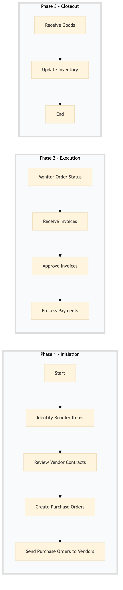

| Role | Steps |
|---|---|
| Food & Beverage Manager | 1.1 3.1 3.2 |
| Procurement Manager | 1.2 1.3 1.4 2.1 |
| Accounts Payable Specialist | 2.2 2.4 |
| Finance Manager | 2.3 |
| Step | Name | Role | System | Input | Output | KPI | Dec? | Exc? | Pain Point / Risk |
|---|---|---|---|---|---|---|---|---|---|
| 1.1 | Identify Reorder Items | Food & Beverage Manager | Oracle OPERA Cloud | Inventory report from Oracle OPERA Cloud | Reorder list | Less than 30 minutes | N | Y | Incorrect inventory levels leading to overstocking or stockouts. |
| 1.2 | Review Vendor Contracts | Procurement Manager | Birchstreet Procurement | Reorder list | Approved vendor list | Less than 60 minutes | N | Y | Outdated or non-existent contracts with preferred vendors. |
| 1.3 | Create Purchase Orders | Procurement Manager | Birchstreet Procurement | Approved vendor list | Purchase orders | Less than 45 minutes | N | Y | Manual errors in purchase order creation. |
| 1.4 | Send Purchase Orders to Vendors | Procurement Manager | Birchstreet Procurement | Purchase orders | Acknowledgment from vendors | Less than 30 minutes | N | Y | Delays in vendor response times. |
| 2.1 | Monitor Order Status | Procurement Manager | Birchstreet Procurement | Acknowledgment from vendors | Order status report | Less than 15 minutes | Y | N | Lost or delayed purchase orders. |
| 2.2 | Receive Invoices | Accounts Payable Specialist | SAP S/4HANA | Order status report | Invoices | Less than 30 minutes | N | Y | Incorrect or incomplete invoices. |
| 2.3 | Approve Invoices | Finance Manager | SAP S/4HANA | Invoices | Approved invoices | Less than 60 minutes | Y | N | Delayed or erroneous invoice approvals. |
| 2.4 | Process Payments | Accounts Payable Specialist | SAP S/4HANA | Approved invoices | Payment confirmation | Less than 30 minutes | N | Y | Payment processing delays. |
| 3.1 | Receive Goods | Food & Beverage Manager | Oracle OPERA Cloud | Payment confirmation | Goods received note | Less than 60 minutes | Y | N | Damaged or incorrect goods delivery. |
| 3.2 | Update Inventory | Food & Beverage Manager | Oracle OPERA Cloud | Goods received note | Updated inventory report | Less than 45 minutes | N | Y | Manual errors in inventory updates. |
This process outlines the Food & Beverage purchasing procedure at a Marriott full-service hotel, ensuring efficient procurement and management of culinary supplies.